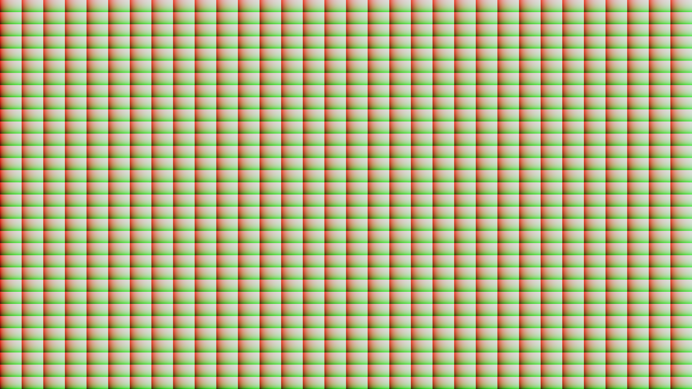

UE 场景渲染实验材质精度与坐标范围
同一个程序化平面，比较移动材质精度设置与坐标重定位。颜色直接显示小数坐标，便于发现细节丢失。
UV × 32 → 加整数原点 → Frac → RGB
R/G：坐标的小数部分；B：二者乘积。Full / Half 使用原点 4096，Local 使用原点 0。
实际 UE 运行画面

Windows / RTX 4080 / D3D11 ES3.1；请求、CSV与图片尺寸均为1600×900。三张独立关卡共用几何、相机、曝光与输出公式。首轮被默认Pawn遮挡的画面已排除。
当前桌面移动预览中，Full 与 Half 图片逐像素一致。精度设置与实际运算类型之间还隔着平台宏、编译器和设备能力；本组画面用于检查表达式与配置，不给出FP16吞吐或功耗结论。
为什么优先控制坐标范围
同样的小数细节叠加在更大的整数坐标上，浮点数能保留的小数位会减少。下表使用 Python 的 IEEE-754 binary16 转换作为数值参考，与上方 UE 实际画面分开记录。
当 4096.375 先被舍入到 4096，后续 Frac 得到0，细节已经丢失。对需要周期坐标的材质，可以先拆分整数原点与局部坐标，在较高精度阶段完成重定位，再把小范围数值传给像素阶段。具体方法需保持纹理周期、导数和跨块边界一致。
UE 设置如何进入 Shader
材质保存 FloatPrecisionMode。Common.ush 根据像素阶段与全精度开关选择 MaterialFloat 类型，Platform.ush 再根据目标平台决定 half 的映射。Customized UVs 可把适合线性插值的UV运算移到顶点阶段；非线性运算移动后需要检查细分密度与插值误差。
实现：Scripts/build_precision.py；记录：Evidence/Precision。Shader编译诊断保存在本地，公开包包含原创建图脚本、材质资产与数值报告。